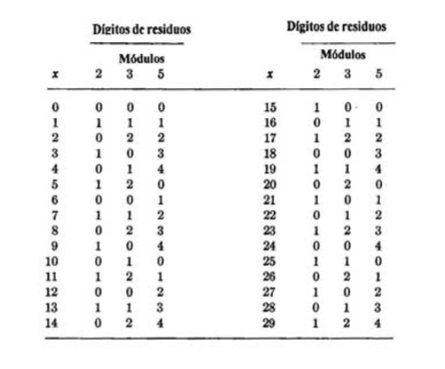

Aritmetica Residual.
En el sistema numérico residual todas las operaciones aritméticas excepto la división son sin acarreo; o sea cada digito en el resultado es una función de solo los dígitos correspondientes a los operados. Por consecuencia como la suma, sustracción y la multiplicación se pueden efectuar en un "Computador de residuos" en menos tiempo que lo que sería posible en un computador binario equivalente (en lo que se refiere a velocidad y rango numérico).
Algunas de las desventajas del sistema numérico residual cuando se compara con los sistemas numéricos de base numérico como sigue:
- 1. La comparación de los números es difícil
- 2. Es difícil de terminar si ha ocurrido un rebasamiento
- 3. La división es compleja
- 4. El sistema numérico residual no es conveniente para la representación de fracciones
- 5. La aritmética residual solo se puede justificar si hay métodos eficientes de conversión hacia el sistema numérico residual
(x1,x2,x3,…,xr)=(x mod m1,x mod m2, x mod m3,…,x mod mr)
Esto se llama representación modular o de residuo de x
(x1,x2,x3)=(x mod m1,x mod m2, x mod m3)
Una propiedad importante de la aritmética es la ley de cancelación de la multiplicación
(ca) mod m=(cb) mod m ? a mod m = b mod m
Teorema de Fermat: Si a es un entero y m es un primo, entonces:
a^m mod m = a mod m